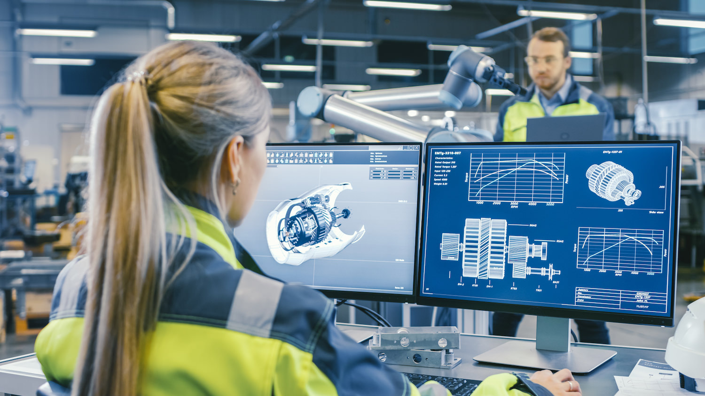
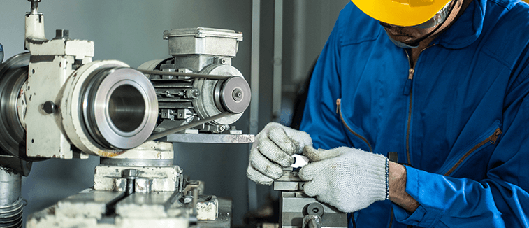

WHAT CAREERS ARE THERE IN MECHANICAL ENGINEERING?
Society depends on mechanical engineering. The need for this expertise is great in so many fields, and as such, there is no real limit for the freshly minted mechanical engineer. Jobs are always in demand, particularly in the automotive, aerospace, electronics, biotechnology, and energy industries.
Here are a handful of mechanical engineering fields.
In statics, research focuses on how forces are transmitted to and throughout a structure. Once a system is in motion, mechanical engineers look at dynamics, or what velocities, accelerations and resulting forces come into play. Kinematics then examines how a mechanism behaves as it moves through its range of motion.

Materials science delves into determining the best materials for different applications. A part of that is materials strength—testing support loads, stiffness, brittleness and other properties—which is essential for many construction, automobile, and medical materials.
How energy gets converted into useful power is the heart of thermodynamics, as well as determining what energy is lost in the process. One specific kind of energy, heat transfer, is crucial in many applications and requires gathering and analyzing temperature data and distributions.
Fluid mechanics, which also has a variety of applications, looks at many properties including pressure drops from fluid flow and aerodynamic drag forces.

Manufacturing is an important step in mechanical engineering. Within the field, researchers investigate the best processes to make manufacturing more efficient. Laboratory methods focus on improving how to measure both thermal and mechanical engineering products and processes. Likewise, machine design develops equipment-scale processes while electrical engineering focuses on circuitry. All this equipment produces vibrations, another field of mechanical engineering, in which researchers study how to predict and control vibrations.
Engineering economics makes mechanical designs relevant and usable in the real world by estimating manufacturing and life cycle costs of materials, designs, and other engineered products.